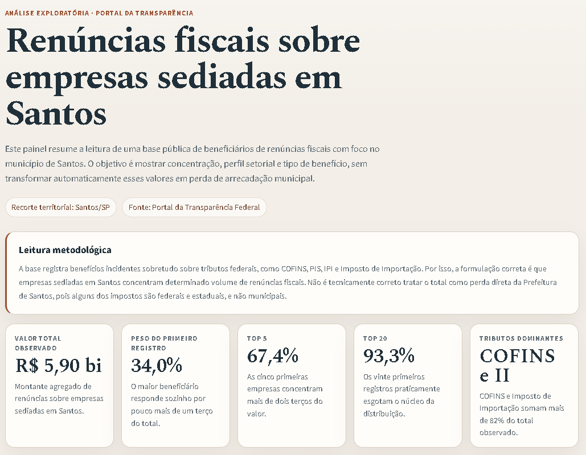
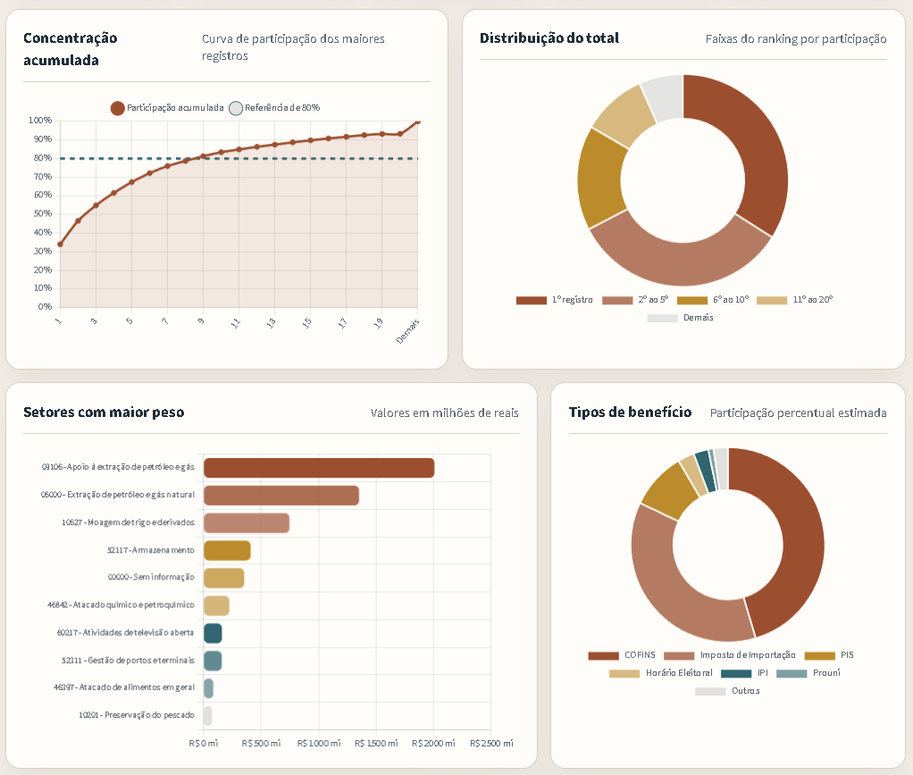
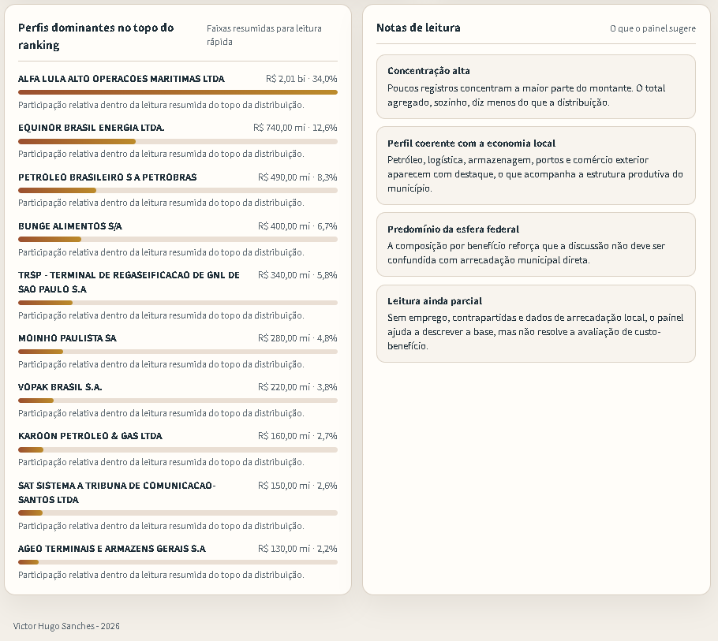

An analytical dashboard built to summarize a public dataset of tax-expenditure beneficiaries, focusing on concentration, sector profiles, and benefit types associated with companies headquartered in Santos.
Category: DataStatus: publishedSource: Brazil's Federal Transparency Portal
Project overview
The dashboard transforms an extensive public dataset into a clearer, more accessible, and visually organized analysis without misrepresenting the nature of the observed data.
The work combines data exploration, methodological interpretation, and dashboard design to highlight concentration, dominant sectors, benefit types, and the limits of what can and cannot be inferred directly from the dataset.
Project screens
01/03

Dashboard opening with methodological context, a summary of the geographic scope, and the dataset's main aggregate indicators.

A visual section featuring the concentration curve, total distribution, highest-weight sectors, and predominant benefit types.

A closing ranking of dominant records with interpretation notes that help prevent incorrect conclusions about municipal tax revenue.
What the dashboard delivers
A quick view of concentration among the dataset's largest records.
A visualization of the sector weight of beneficiary companies.
A comparison of the most frequently occurring benefit types.
Methodological notes distinguishing observed tax expenditures from direct losses in municipal tax revenue.